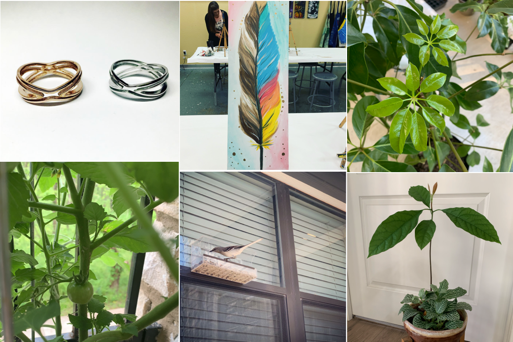

Yingxiao Ouyang
I always kick off projects by understanding business impact, tech support and user pain points. If there is any key user stories missing, I seek support to conduct user research. After framing a solid goal to pursue, I start proposing solutions and share prototypes with stakeholders. I always back up my concepts with clickable prototypes to turn imagination into something tangible, and of course, to reveal gaps. I provide detailed design suggestions according to the company’s design system and also best UX practice. All these ensures the team have a solution that is user-friendly and feasible within timeline.
The company I like I lot is Nintendo, a great example that design doesn’t always mean best tech, but a true understanding of users. I remember there is a comment I saw on twitter, “Even I forget what I want, but Nintendo always remembers.” I want to build something like this.

Teams I was honored to be part of
My personal project was recently honored with a 2025 iF Design Award, an A' Design Award, and a UX Design Award nomination, marking a significant milestone in my design career. Several design peers have reached out to learn more about my experience and process. If you’d like to hear more, please feel free to contact me.

The 2025 IF Design Trends Conference at NY City
Design attracts me in the ability to bring kindness to others. I want to amplify my design ability in the following 10 years by building industry-leading experiences. I would like to see my personal growth in project management, craft ability, in-depth understanding of human behaviors and team-building.
Switch console, Dell Voice Bank, ADPList and Data Vis from the New York Times are the experiences I look up to
I started my design journey back in September 2011 as an industrial design student. After spending three years learning hardskills like sketching, rendering and 3D modeling, I found my design passion in smart devices. For my undergraduate project, I spent a year to research, design and prototype a smart cradle for newborns. Looking back this was the first time I knocked on the door of User Experience.
Later in 2015, I was exposed to the challenging but interesting research world at School of Industrial Design at Georgia Tech. After several school projects, I discovered that i don’t really care if an orange juicer is artsy, rather I always spend more time thinking about user behaivors. I still remember the weekend sitting in the libary, scratching one and another flow charts and trying to find out the best way to clean up flows for an interactive mirror project.
Encouraged by peers, I spent a year as a design intern in the real business world. In my internship in Charlotte, I got involved into user testing sessions at Electrolux and helped to modify flows of a type of dishwasher. In my internship in Tencent, I observed teenager group chats for two weeks and proposed a new design direction for social payment interaction for teenagers. This type of work motivated me and I felt this was something I want to do for the next 10-20 years.
Back to Atlanta, I spent more time systematically learn user research methods through projects. I took the User Research Method class and a Cognitive Psychology class, which i treated as fingerposts of my UX career. I found faith in the previous experiments done by psychologists, like the one to distinguish familiarity from experienced by 200ms difference.
I started my career as a full-time product designer at WalmartLabs at 2019. Right now, I am colloborating with product managers and developers to push warehouse products forward for Walmart assocaites. And my favourite designer this year is Pablo Stanley, a designer who is funny, professional and care about human stories.
I worked on the design specs for this washer as my first UX project back in 2017, and surprisingly found it in my friend's apartment several months ago! It was an accomplishment moment for me!
I love observing and drawing human figures. Since 2021, I have been sketching human figures on my notebook and ipad. I am studying Dynamic Human Figures lately and have been facinated by how complicated human muscles are!

Whenever I have time, I practice yoga, plant new seeds, feed wild birds, craft using different materials, play games (I love Animal Crossing and Stardew Valley) and travel around.
